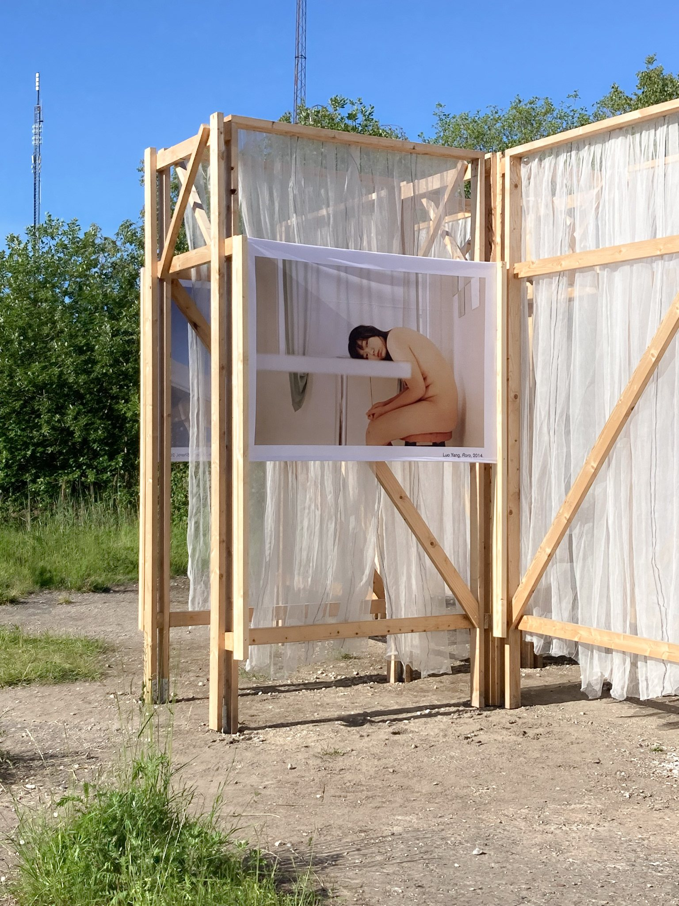
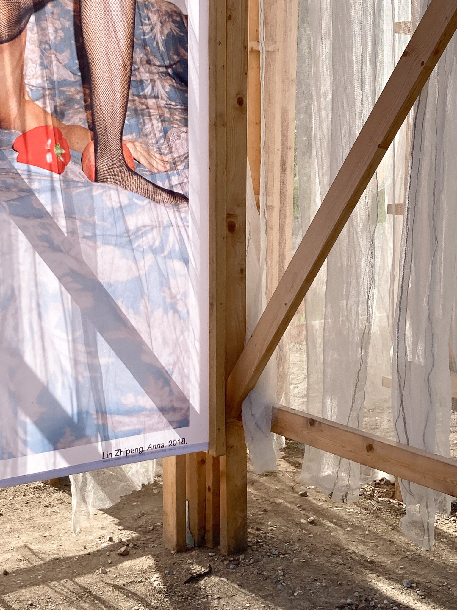
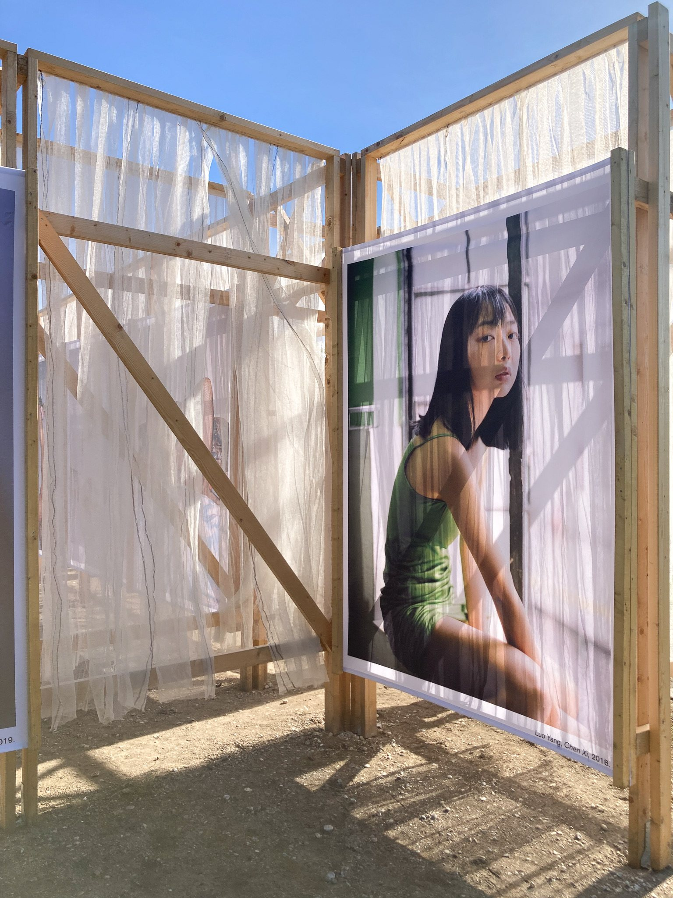
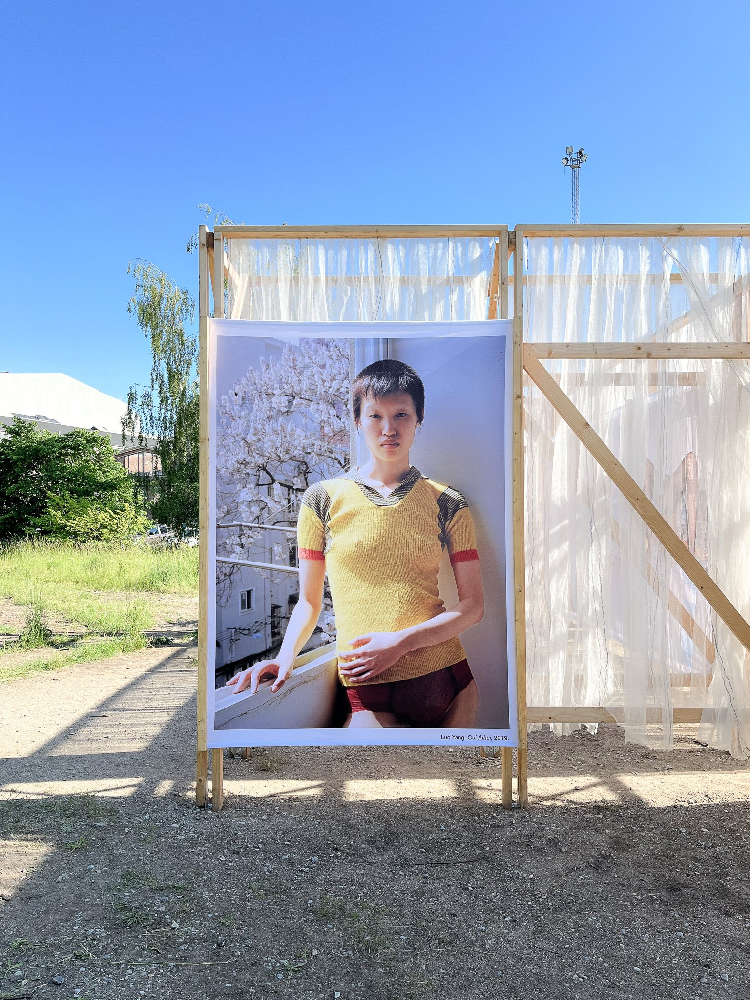
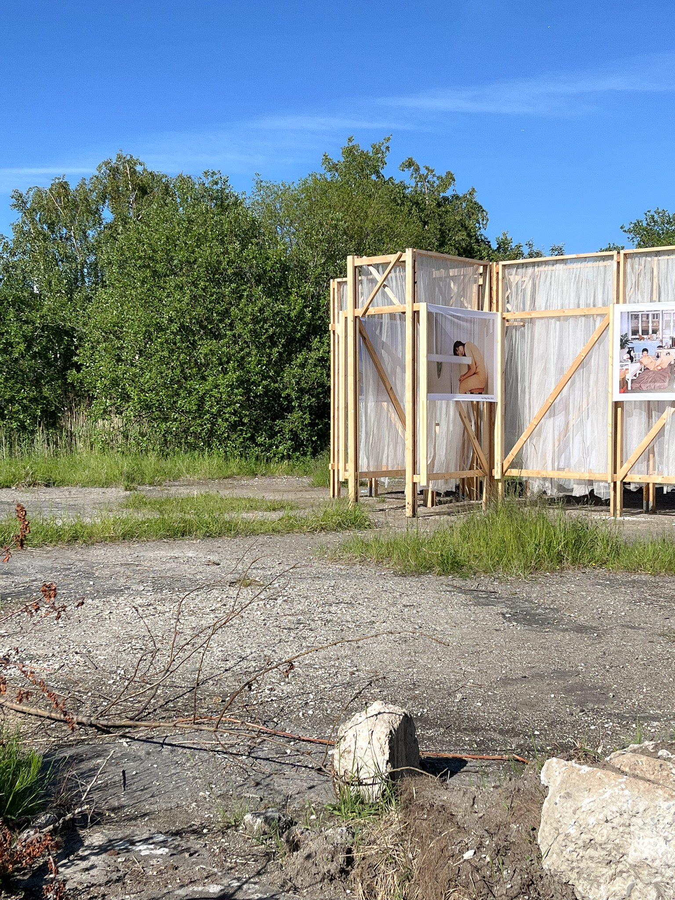
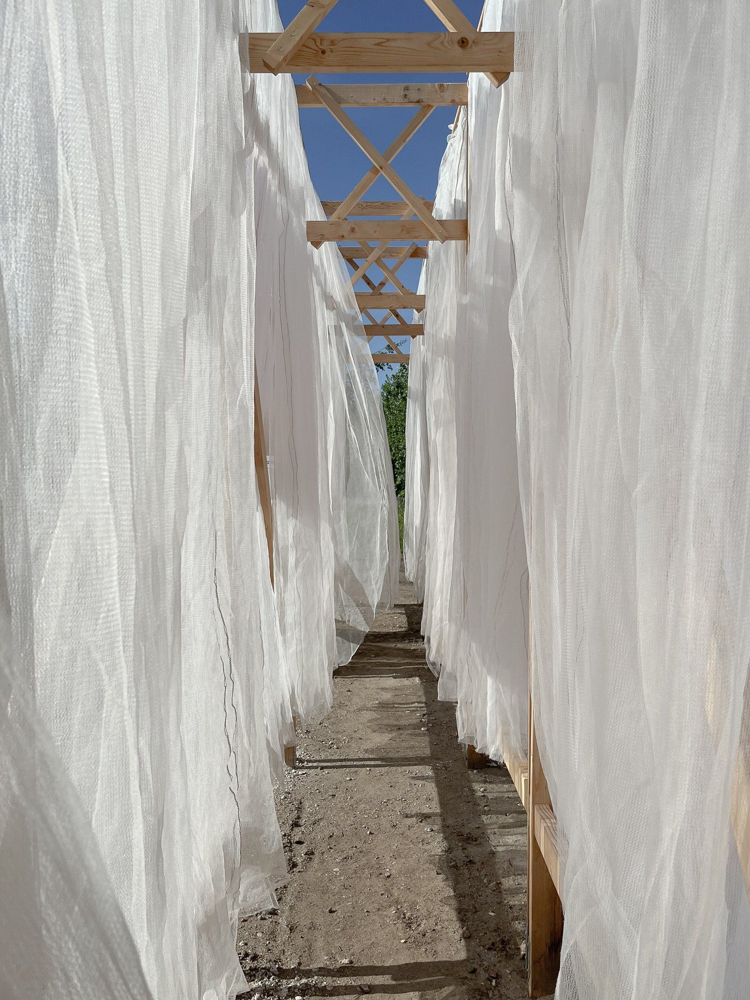
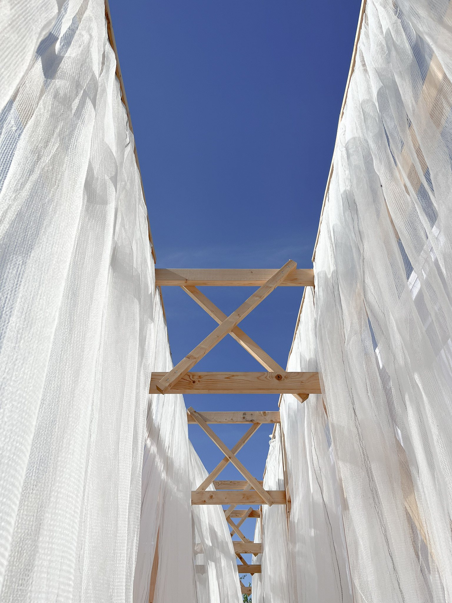
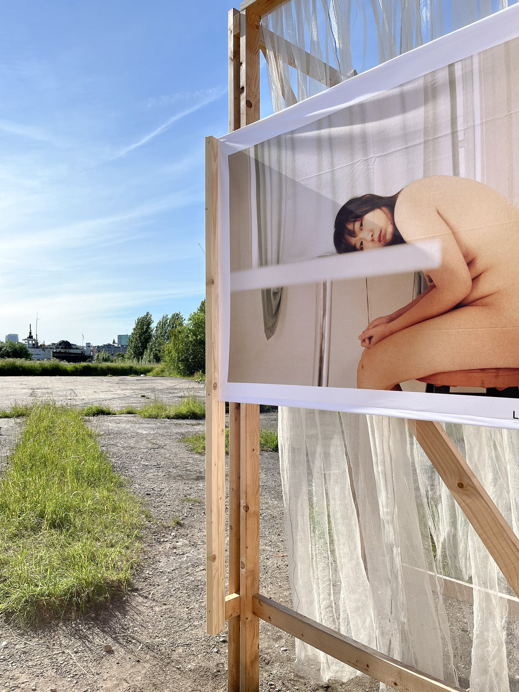

COPENHAGEN PHOTO FESTIVAL
reoccuring installation 2021-2024
space frame / installation
in collaboration with kim lenschow - https://www.kimlenschow.com
exhibition installation. copenhagen photo festival - beddingen, Refshaleøen, copenhagen
'space frame' installation
(2021+2022)
for Copenhagen Photo Festival
in collaboration with
Office Kim Lenschow
.
artworks by
lin zhipeng
,
curated by
tofu collective
.
supported by
dreyers fond
.
photos by
jakob holmqvist larsen







